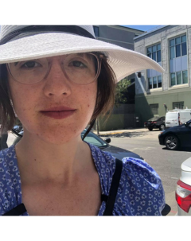
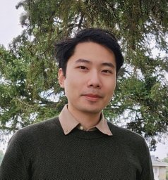
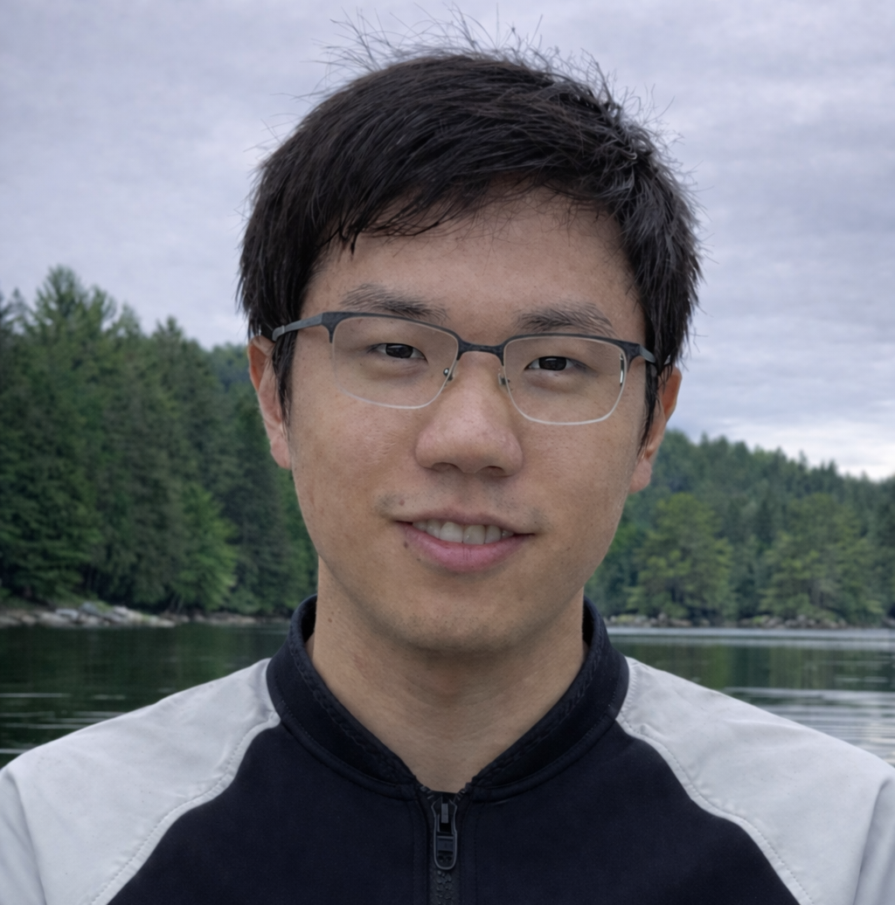
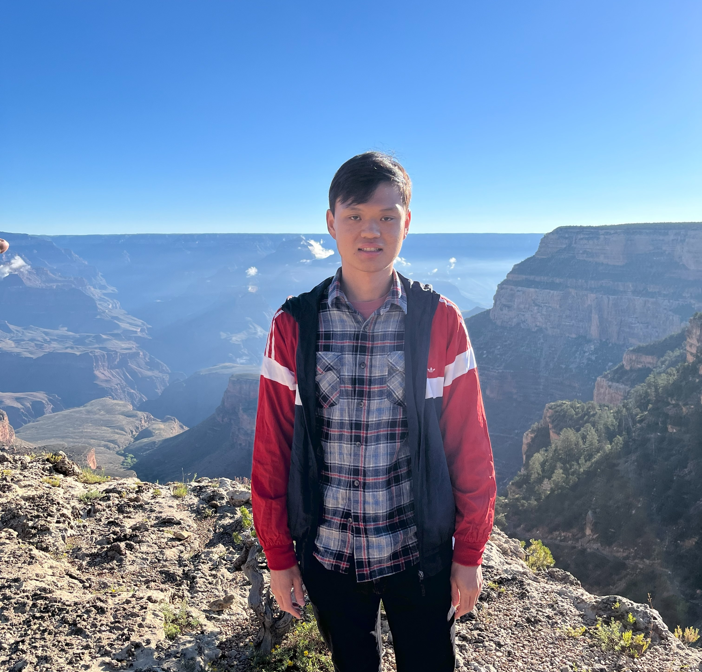
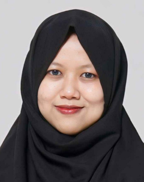
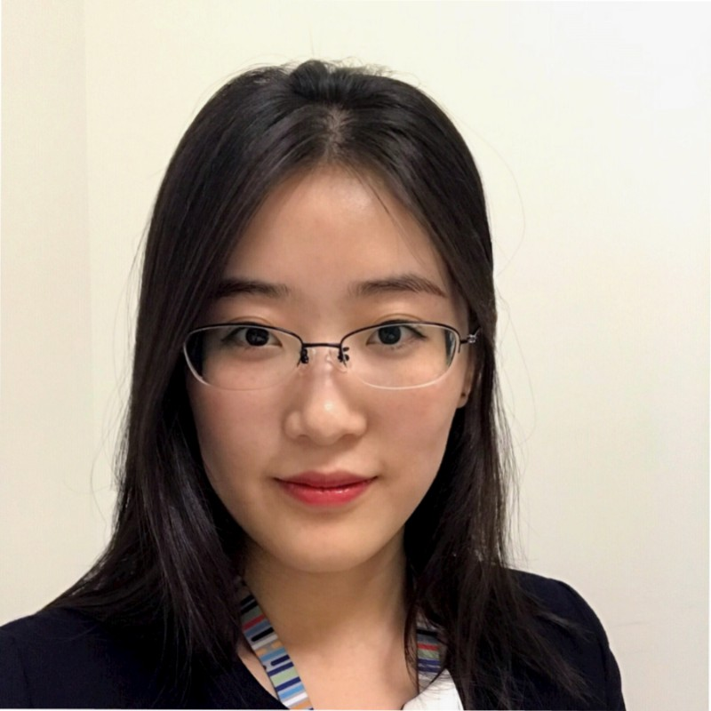
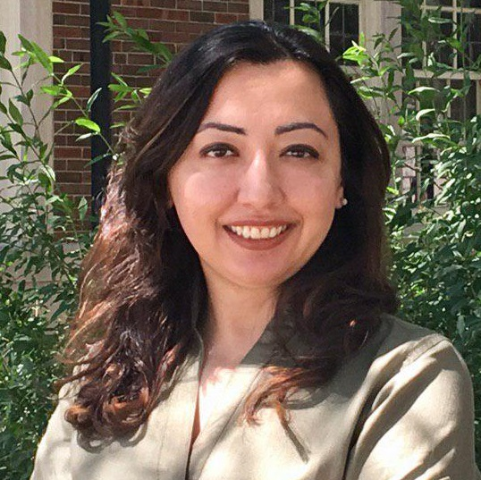
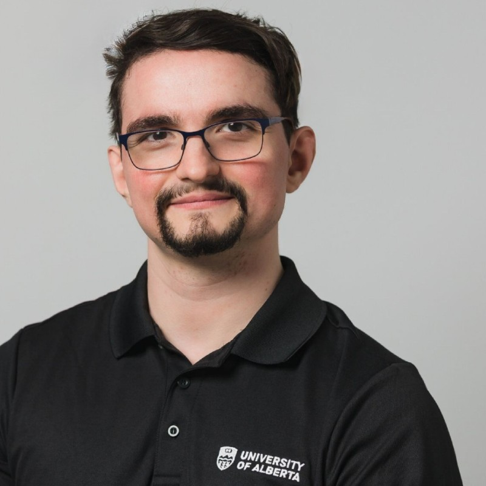
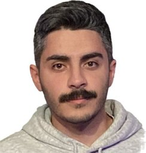

Welcome to CSER 2026 Fall!
CSER 2026 Fall will be held and co-located with the IEEE CASCON 2026 conference at York University on November 9, 2026.
Aim
CSER brings together (primarily) Canadian-based software engineering researchers, including faculty, graduate students, industry participants, and any others who are interested.
Keynote
Weiyi Shang, University of Waterloo
Important Dates
| |
Deadline |
| Proposal Submission |
October 23, 2026 |
| Registration |
October 16, 2026 (CASCON early registration) |
Please check back later for updates.
Keynote @ CSER
Weiyi Shang
University of Waterloo
Messy in Practice: The Overlooked Challenges of Log Preprocessing
Talk Abstract: Software systems record important runtime information in their logs, helping practitioners understand system behavior and diagnose failures. The volume of these logs makes automated analysis essential to software operation and maintenance. Yet the successful adoption of log analysis in practice often depends on preprocessing, a seemingly routine step whose complexity is easy to underestimate. Real-world logs challenge the assumptions underlying existing approaches, creating a gap between preparing data in controlled settings and making it useful in practice. This keynote discusses the overlooked challenges of log preprocessing and provides an overview of our efforts toward more practical approaches that support the needs of downstream analysis.
Bio: Weiyi Shang is a Professor at the University of Waterloo. His research interests include AIOps, big data software engineering, software log analytics, and software performance engineering. He serves as a Steering Committee member of the SPEC Research Group and has been recognized among the top software engineering research stars worldwide in a bibliometric assessment. He is an ACM Distinguished Member and a recipient of the 2021 CS-Can/Info-Can Outstanding Early Career Computer Science Researcher Prize, SIGSOFT Distinguished Paper Awards at ICSE 2013, 2020, and 2025, the Best Paper Award at WCRE 2011, and the Distinguished Reviewer Award for the Empirical Software Engineering journal. His research has been adopted by industrial collaborators, including BlackBerry and Ericsson, to improve the quality and performance of software systems used by millions of users worldwide. Contact him at wshang@uwaterloo.ca.
Accepted Research Talks

New faculty talk
Programmable Support for Code Comprehension During LLM-Assisted Programming
Amber HorvathUniversity of Victoria
About the speaker
Amber Horvath is an assistant professor of Software Engineering in the Computer Science Department at the University of Victoria. She works at the intersection of human-computer interaction (HCI), software engineering, and artificial intelligence in order to design and deploy intelligent human-centered developer tooling for assisting in the software engineering process, with a focus on tools for understanding code. Amber has previously worked at MIT CSAIL, Carnegie Mellon University’s Human-Computer Interaction Institute, Google, and Oregon State University. Her research has been published at premiere venues in HCI (CHI, UIST, and CSCW) and software engineering (ICSE), with award winning publications at CHI and CSCW.

From Signals to Fixes: Intelligent Software Debugging in the Age of LLMs
An Ran ChenUniversity of Alberta
About the speaker
An Ran Chen is an Assistant Professor in the Department of Electrical and Computer Engineering at the University of Alberta. His research focuses on software engineering, particularly automated debugging and testing, program analysis, AIOps, and the application of large language models to software engineering. He leads the SODA (Software Debugging and Analysis) Nexus Lab, where his group develops intelligent techniques to improve software reliability, debugging, and maintenance.
New faculty talk
Assuring the Safety of AI-Based Systems: From Requirements to Evidence
Aren A. BabikianMcGill University
About the speaker
Aren A. Babikian is an Assistant Professor in the Department of Electrical and Computer Engineering at McGill University. He received his PhD in Software Engineering from McGill University and was a postdoctoral fellow in the Department of Computer Science at the University of Toronto. His research focuses on the safety assurance of AI-enabled cyber-physical systems (CPSs), integrating formal methods with AI-based approaches, alongside techniques from model-driven engineering, requirements engineering, and testing. His work has been published in software engineering and related conferences (incl. FSE, RE, MODELS) and journals (incl. TSE, EMSE, SOSYM).

New faculty talk
Modeling the Behavior and Organization of AI Agents for Software Engineering
Boqi ChenUniversity of Ottawa
About the speaker
Boqi Chen is an Assistant Professor in the School of Electrical Engineering and Computer Science (EECS) at the University of Ottawa. He received his PhD from McGill University. His research lies at the intersection of software engineering (SE) and artificial intelligence (AI), with a focus on the reliable and robust integration of AI components, including large language models (LLMs) and multi-agent systems, into SE processes. He approaches this through formal, model-driven, and neuro-symbolic methods, with an emphasis on model-based validation and principled agentic workflow design. He has served as a reviewer for many conferences and journals, including AAAI, ASE, TSE, TOSEM, and EMSE.

Human-Guided Language Models for Source Code Summarization
Chia-Yi SuYork University
About the speaker
Chia-Yi Su is a postdoctoral fellow working with Maleknaz Nayebi in Lassonde School of Engineering at York University. He completed his Ph.D. in Computer Science and Engineering at University of Notre Dame, advised by Collin McMillan in Automatic Program Comprehension Lab. His dissertation lies in the intersection of artificial intelligence with the applications to software engineering (AI4SE) and cognitive science. His current research combines requirement engineering and compliance to develop explainable AI agents with the applications in the healthcare domain.
New faculty talk
Cloud-Specific Automated Reasoning
Federico MoraUniversity of Waterloo
About the speaker
Federico Mora is an Assistant Professor in the David R. Cheriton School of Computer Science at the University of Waterloo and a Faculty Affiliate at the Vector Institute. His primary research area is formal methods. Federico is the recipient of a Qualcomm Innovation Fellowship and UC Berkeley’s David J. Sakrison Memorial Prize.

New faculty talk
When AI Looks Right but Isn’t: Toward Trustworthy AI for Software Quality Assurance
Ratnadira WidyasariUniversity of Victoria
About the speaker
Ratnadira Widyasari is an Assistant Professor in the Department of Computer Science at the University of Victoria. Her research focuses on advancing software quality assurance through automation and explainability. She is particularly interested in exploring how artificial intelligence and large language models can be used to build more reliable, transparent, and effective software engineering tools. Her research has been published in leading software engineering venues, including conferences such as ICSE and FSE, and journals such as TSE, TOSEM, and EMSE.

New faculty talk
Privacy-Preserving Collaboration for Secure Software Engineering
Xinrui ZhangLakehead University
About the speaker
Xinrui Zhang is a tenure-track Assistant Professor in the Department of Computer Science at Lakehead University. Before joining Lakehead, she was a Postdoctoral Associate at the School of Computing, Queen’s University. She received her Ph.D. in Electrical and Computer Engineering from Carleton University. Her research lies at the intersection of software engineering, cybersecurity, and privacy-enhancing technologies, with work published in venues such as Empirical Software Engineering, the Journal of Systems and Software, and IEEE Transactions on Cloud Computing. She received a Best Paper Award at FCN 2024 and was supported by an Ericsson Fellowship during her doctoral studies.
New faculty talk
Improving Reliability of Cloud Infrastructure Systems: From Testing to Verification
Xudong SunUniversity of Toronto
About the speaker
Xudong Sun is an assistant professor at the department of Electrical and Computer Engineering in the University of Toronto. Xudong's research focuses on system reliability and formal verification. Xudong obtained his PhD from the University of Illinois Urbana-Champaign.

Creativity in Programming: From code and gaze to adaptive human–AI collaboration
Zohreh SharafiPolytechnique Montreal
About the speaker
Zohreh Sharafi is an Assistant Professor of Software Engineering in the Department of Computer and Software Engineering (GIGL) at Polytechnique Montréal and an IVADO Professor. Her research focuses on the human aspects of software engineering, with particular attention to developers’ problem-solving strategies, creativity in software development, and trust in AI-supported tools and processes. She investigates how developers think creatively, generate solutions, and navigate complex design challenges, with the goal of designing tools and practices that foster more creative and effective software development. She is also interested in how human factors such as gender, experience, and cognitive processes shape software development practices. Her research is supported by NSERC, FRQ, IVADO, and Polytechnique Montréal.
Prior to joining Polytechnique Montréal, she was a Senior Research Fellow at the University of Michigan, Ann Arbor, and an NSERC Postdoctoral Fellowship recipient. She also brings industry experience from the finance technology sector. She holds a Ph.D. in Computer Engineering from Polytechnique Montréal.

Token Efficient Task Execution via Application Behavior Modeling for Web Agents
Alexandru IantaUniversity of Alberta
About the speaker
Alex is a PhD student under the supervision of Dr. Eleni Stroulia at the University of Alberta. His work focuses on techniques for improving the efficiency of agents executing web tasks. He is interested in getting to learn more about transformer models at a lower-level, exploring concept activation vectors, steering, and other interpretability techniques that could be leveraged by harnesses and/or external models to improve the safety or efficiency of agents. Outside of research he enjoys running, and is training to complete a marathon next year. He is always interested in learning about other's research, and finding opportunities for collaboration on future work.

Making CI Smarter: Lessons Learned from Performance Testing at Mozilla
Ali SayedsalehiConcordia University
About the speaker
Ali Sayedsalehi is a final-year PhD candidate in Computer Science and Software Engineering at Concordia University, where he works with Dr. Peter C. Rigby. His research focuses on software testing, continuous integration, performance engineering, and the use of machine learning to improve software development workflows. He has also worked with Mozilla on performance testing and CI optimization, including risk-aware testing, test scheduling, and performance regression analysis. His work aims to bridge empirical software engineering research with practical tools and systems that can be applied in large-scale development environments.
Accepted Posters
- Suzhen Zhong (Queen's University) – Human-AI Synergy in Agentic Code Review
- Kalvin Eng (University of Alberta) – VISTA: Querying Bug Reports, Commits, and Tests for LLM-Assisted Video Game Quality Assurance
- Al Muqshith Mohamed Shifan (Ontario Tech University) – Evolved Neural Agents as Tireless Playtesters
- Dewni Pabasara Deraniyagala (University of New Brunswick) – Beyond Prompting: Fine-Tuning and Retrieval for Backlog Technical Debt Detection with LLMs
- Kevin Christopher Chua (Ontario Tech University) – Trait Activation Steering: Keeping Small Model NPCs In Character
- Hanzheng (Hozier) Dai (University of Alberta) – Understanding Bugs in Game Compatibility Layers
- Haonan Zhang (University of Waterloo) – On the Brittleness of Web UI Testing: A Pragmatic Perspective
- Yuyang Wang (University of Alberta) – Benchmarking API Migration in Real-world Repositories
CSER 2026 Fall Meeting Program
Event Location: Hall A&B, Second Student Centre, York University
| 08:30 - 09:00 |
Badge Collection / Registration
|
| 09:00 - 09:10 |
Opening & Logistics
|
| 09:10 - 10:00 |
Keynote: Weiyi Shang
Messy in Practice: The Overlooked Challenges of Log Preprocessing
|
| 10:00 - 10:20 |
Coffee Break
|
| 10:20 - 12:00 |
Session 1
|
| 12:00 - 13:00 |
Lunch Break & Poster Session
|
| 13:00 - 14:30 |
Session 2
|
| 14:30 - 15:00 |
Coffee Break
|
| 15:00 - 16:30 |
Session 3
|
| 16:30 - 17:00 |
Closing & Award Session
|
Call for Research Talks
Dear CSER Community,
CSER 2026 Fall is just around the corner! We are soliciting proposals for short research talks. We welcome submissions from faculty members, postdoctoral researchers, and industry researchers. Newly hired faculty members are especially welcome to take this opportunity to introduce themselves, share their research, and engage with the community. Each talk will last 20 minutes, followed by a brief Q&A session. Please note that all talks will be held in person.
CSER 2026 Fall will be co-located with CASCON and held on November 9, 2026. This is an excellent opportunity to present your work to a broader audience and foster collaboration. Registration is available through the CASCON 2026 Registration website. Your CASCON registration should cover at least Monday to attend CSER.
If you are interested in giving a research talk, please submit the following details:
- Your name
- Your institution
- Email contact information
- A tentative title for your talk
- A short biography
Please complete the Research Talk Proposal Form by Friday, October 23, 2026. After the submission deadline, we will follow up with further details regarding the schedule and presentation format.
If you know of any faculty members who might be interested, please forward this invitation to them or contact us directly.
We look forward to your participation!
Call for Student Presentation/Poster
Dear CSER Community,
CSER 2026 Fall is just around the corner! As usual, we invite students to showcase their research at CSER 2026 Fall by delivering a 10-minute light talk or presenting a poster, depending on the number of participants.
CSER 2026 Fall will be co-located with CASCON and held on November 9, 2026. This is an excellent opportunity to present your work to a broader audience and foster collaboration. Registration is available through the CASCON 2026 Registration website. Your CASCON registration should cover at least Monday to attend CSER.
If you are interested, please submit your details including:
- Your name
- Your institution, program, and supervisor
- Email contact information
- A tentative title for your presentation
Please complete the Student Presentation Proposal Form by Friday, October 23, 2026. After the submission deadline, we will follow up with further details regarding the schedule and presentation format.
Faculty members, please encourage your students to participate!
We look forward to your participation!
Organizing Committee
Program Co-Chairs
Web Chairs
Registration
This year, CSER is co-located with CASCON and held on November 9, 2026. This is an excellent opportunity to present your work to a broader audience and foster collaboration. The CASCON early registration deadline is October 16, 2026. Please register through the CASCON 2026 Registration website. Your CASCON registration should cover at least Monday to attend CSER.